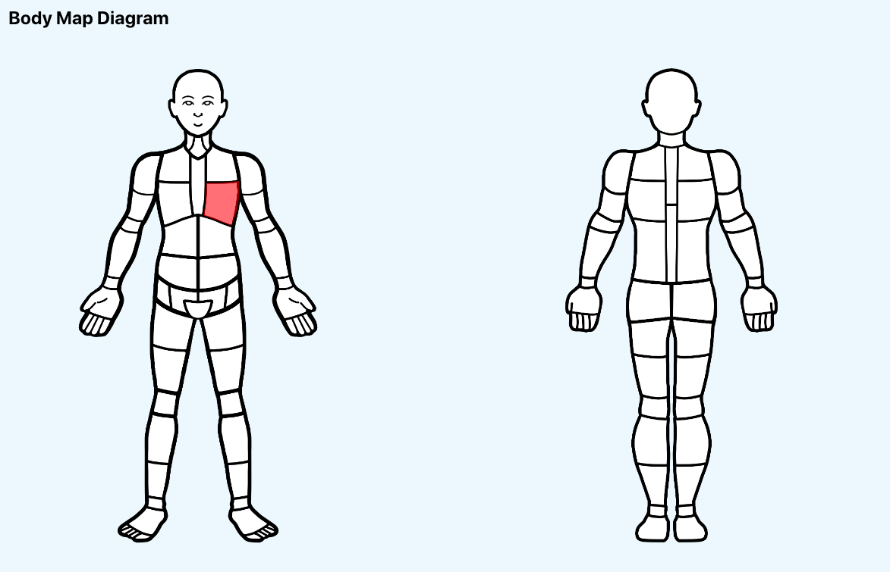
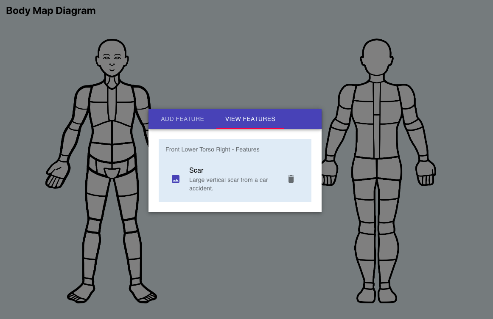
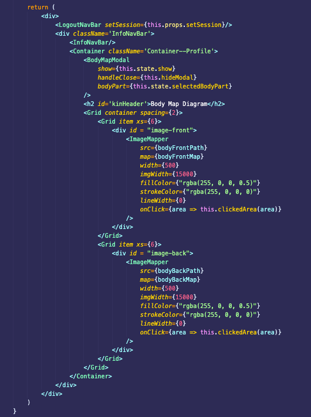

Forensic Guardians International Web Application
Project Description
Forensic Guardians International is a company that provides a biological profiling service. This service, implemented through a Web Application, collects, encrypts, and stores any identifying features of a client. These could be pictures of the client's tattoos, birthmarks, scars, and so on. These features can then be used to identify people in the case of an emergency.
I worked in a team of 4 for our industry client, Forensic Guardians International, to design an intuitive UI and backend for storing pictures and meta-data of customer's identifying features. We developed following Agile and used a Scrum Board. During this project I got to use and become proficient in technologies such as React, Node.js Express, and PostgreSQL. My role in the group was the team lead (by democratic vote) and Full Stack Developer. I really enjoyed being able to work with and master all aspects of the Web App. Since our client gave us a lot of freedom in terms of our implementation, I found it really exciting to take their requirements and develop our own solutions to them.
What I Did
Some of my technical work included:
- Creating advanced React components to be used in our Body Map Diagram page.
- Styling the React components with Material-UI, a React UI Framework, to ensure a user-friendly and responsive Web App.
- Designing database tables for optimal normalization as well as creating seeding scripts.
- Creating routes in Node.js Express for retrieving and sending information to the database.
- Debugging the existing codebase to ensure a high-quality, bug-free final product for our client.
Some of my non-technical work included:
- Leading team meetings and demonstrations with our client.
- Extensive documentation on project installation and use.
- Creating and assigning tasks for myself and the team.
- Communicating issues with our client via email.
Screenshots and Code Samples
Body Map Page
Below is the Body Map page I created for our project. It is implemented using two high-quality diagrams with Image Maps layered on top. I used a package called react-image-mapper to implement the Image Map in React. The resulting diagram is fully responsive and split into 112 different sections.
Each section highlights red when it is hovered on and will open a modal when clicked. The modal is loaded with information from whichever section is clicked. On this modal you can add identifying features accompanied by a photo from your webcam or computer. You can also view and delete features you've already added.
 Body Map Page React Code
This is a snippet of the React Component for the Body Map page I created. Here you can see the two Image Maps imported from the react-image-mapper package, filled with custom attributes to work with our images. I also used custom components from Material-UI to make sure the page is responsive and clean looking. Finally, at the top, there is the BodyMapModal component I created that will be opened and passed relevant information when any section on the diagram is clicked.
Express Route
I designed this Express Route, called body_features.js, and referenced it in React Components when I wanted to Read, Create, or Delete any
identifying features. I used Knex.js, a SQL query builder, to communicate with our database.
By using Express Routing, I take advantage of code reuse and create a nice interface to work with.
Database Script
This is an example of one of the database scripts I created for making the body_features table. The script is re-runnable and won't
break if the table already exists. When writing the script, I first wrote it in SQL to better visualize what I wanted. I left the SQL version of the script
as a comment, in case future developers have trouble reading the JavaScript. This script also uses Knex.js.